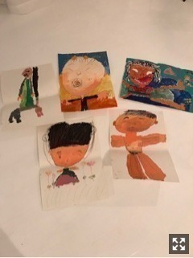

2017/0604Sun暑けり寒けり
ケルティックウーマンの虹の彼方にを
聴くと心が落ち着くので
寝る前によく聴いています♩
よく聴くサントラとその中で1番のお気に入りは、
秒速5センチメートル 「雪の駅」
魔女の宅急便 「木漏れ日の路地」
千と千尋の神隠し 「あの夏へ」
美女と野獣 「bell」
君の名は。 「スパークル」
こんな感じかなぁ。
ぬあー！好きな映画ばかり
久しぶりにゆっくり映画観たいなぁ

皆さんは
どんな曲をどんな時に聴きますか？
いろんな歌に支えられる毎日
こんな気分だからこの曲を聴こう...とか
この曲の歌詞に励まされたとか
1曲1曲が1人1人の人間と同じで深みがあって
違った良さもあっていろんな見方ができる。
たくさんの人に出会う中でたくさんの曲にも出会って
素敵な人生にしていきたいです。
私も乃木坂46として素敵な曲を歌わせていただけて
いるので聴いている人に曲を通して
”何か”を伝えられたらいいなぁ
そう思うとライブにより一層気合いが入っちゃう(*･ω･)ﾉ

髪これくらいにしたい

カニ
arの撮影が楽しすぎてどうしよう。
好きな雑誌に携われることの有り難みを噛み締めて
日々、頑張ります
見てね☆

堀北コンビ
舞台稽古中から本番中まで
毎日ほぼほぼ一緒にいる日奈子
私と同じでかなりの自由人だけど
とにかくまっすぐで優しくて変な日奈子が大好きです
この1ヶ月で前よりも、ぐっと距離が縮まった気がする
同期の中でも日奈子は特に私の悩みや細かい心情までを
汲み取ってくれます。
そんな日奈子にたくさん救われているので
私も日奈子を守っていきたいな
なんてね
大阪公演もうすぐ終わってまうー！
名古屋公演も全力で頑張るで、見とってや！

父の日がもうすぐだそうで
昔私が描いた絵の中に父の絵が1枚混ざっています
どれでしょうかo(^▽^)o
ヒント 飛鳥がこれ、いい！と気に入ってくれた1枚
おやすみおな♩
2017/06/04 21:23
コメント(704)
大阪公演千秋楽おつかれさま～
名古屋も気を緩めず舞台楽しんでね～
和服姿お淑やか！！いい！！
心安らぎたいとき
Simon & Garfunkel：明日に架ける橋、スカボローフェア
ありのままでいたいとき
Nirvana：Come as you are
Grace VanderWaal：I don't know my name
最近寝るとき
乃木坂46：ワタボコリ
こんな感じかな
お父さんの絵は上段中央！！
名古屋も気を緩めず舞台楽しんでね～
和服姿お淑やか！！いい！！
心安らぎたいとき
Simon & Garfunkel：明日に架ける橋、スカボローフェア
ありのままでいたいとき
Nirvana：Come as you are
Grace VanderWaal：I don't know my name
最近寝るとき
乃木坂46：ワタボコリ
こんな感じかな
お父さんの絵は上段中央！！
かわいい
堀ちゃん、こんばんは、、
いつも、ステキなお写真ありがとう、、
応援しているぜ、、
いつも、ステキなお写真ありがとう、、
応援しているぜ、、
未央奈さん
こんばんは。
もう、日付変わって昨日ですが、
モバメを送ってくれて、ありがとう。
大阪公演、無事に終わって何よりです。
カーテンコールの時のエピソード、
真琴さんが未央奈さんと飛鳥さんを
ステージに残してくれたこと、
気持ちがほっこりします。
教えてくれてありがとう。
で、飛鳥さんつながりで、
飛鳥さんが気に入った、
未央奈さんのお父さんが描いた絵は、
上段の真ん中、にしておきます。
自信は、ありません（笑）。
でも、５枚の絵すべて、
いい味出してますね。
絵本の原画みたい。
それでは、もうこのへんで。
眠気に負けそう。
今日、未央奈さんにとって、
良き日でありますように。
こんばんは。
もう、日付変わって昨日ですが、
モバメを送ってくれて、ありがとう。
大阪公演、無事に終わって何よりです。
カーテンコールの時のエピソード、
真琴さんが未央奈さんと飛鳥さんを
ステージに残してくれたこと、
気持ちがほっこりします。
教えてくれてありがとう。
で、飛鳥さんつながりで、
飛鳥さんが気に入った、
未央奈さんのお父さんが描いた絵は、
上段の真ん中、にしておきます。
自信は、ありません（笑）。
でも、５枚の絵すべて、
いい味出してますね。
絵本の原画みたい。
それでは、もうこのへんで。
眠気に負けそう。
今日、未央奈さんにとって、
良き日でありますように。
みおな大好き！堀北コンビも大好き！
みおなさん！ブログ更新ありがとうございます！！
私は毎年見てる某探偵映画が今年は見れなくてショックです…パンフレットさえも買えなくて…
バイトをほぼ毎日入れてるので、私もたまにはゆっくりしたいです(笑)でも欲しいものがたくさんなので頑張ります
私は、大学まで片道約2時間かかるので、そこでいろんな曲を聴いてます！
懐メロも聴くし、バンドも聴くし、アイドルが好きだけどそれだけでなくいろんな方の曲を聴きます！
最近はいくちゃんさんの影響で、GLAYさんの「誘惑」を聴いてます(笑)
でも、もちろん、乃木坂の曲が圧倒的に多いです！！
主に「生まれたままで」と「咄嗟」を聴くのが多いです！
きいちゃんさんとみおなさん可愛いです
個人的に乃木中の成人式の回が印象的です(笑)
私はみおなさんと同じ岐阜県出身です！
バイトで前と同じ失敗をして落ち込んでて、でもバイトで使うメモ帳がないから本屋に買いに行こうと歩いてたら、タワレコがみおなさん一色になってて、のぼりもあって、一瞬で元気がでました(笑)
人の視線も気にせず、2冊目があったみおなさん応援ノートにメッセージを書きました！！！
1冊目にも実は書いたんです！その時は私はまだ高校生で受験前でしたが、今は大学生です！
もし岐阜に帰って読む機会があれば読んでいただけると嬉しいです
握手会、行ったことはあるけどまだ並んだことないので、次の幕張は私の誕生日だから行くつもり(まだ家の人たちの許可を得てないです…)なので、その際はよろしくお願いします
これからも応援してます
私は毎年見てる某探偵映画が今年は見れなくてショックです…パンフレットさえも買えなくて…
バイトをほぼ毎日入れてるので、私もたまにはゆっくりしたいです(笑)でも欲しいものがたくさんなので頑張ります
私は、大学まで片道約2時間かかるので、そこでいろんな曲を聴いてます！
懐メロも聴くし、バンドも聴くし、アイドルが好きだけどそれだけでなくいろんな方の曲を聴きます！
最近はいくちゃんさんの影響で、GLAYさんの「誘惑」を聴いてます(笑)
でも、もちろん、乃木坂の曲が圧倒的に多いです！！
主に「生まれたままで」と「咄嗟」を聴くのが多いです！
きいちゃんさんとみおなさん可愛いです
個人的に乃木中の成人式の回が印象的です(笑)
私はみおなさんと同じ岐阜県出身です！
バイトで前と同じ失敗をして落ち込んでて、でもバイトで使うメモ帳がないから本屋に買いに行こうと歩いてたら、タワレコがみおなさん一色になってて、のぼりもあって、一瞬で元気がでました
人の視線も気にせず、2冊目があったみおなさん応援ノートにメッセージを書きました！！！
1冊目にも実は書いたんです！その時は私はまだ高校生で受験前でしたが、今は大学生です！
もし岐阜に帰って読む機会があれば読んでいただけると嬉しいです
握手会、行ったことはあるけどまだ並んだことないので、次の幕張は私の誕生日だから行くつもり(まだ家の人たちの許可を得てないです…)なので、その際はよろしくお願いします
これからも応援してます
arの堀ちゃんめちゃくちゃ可愛い
レコメンいつも聴いてるよ！
楽しい時間をありがとう。
楽しい時間をありがとう。
おいすー＾＾
ちょっと聞いてシリーズ！ ( ﾟДﾟ)σ
「ポケットの中の戦争」
ワシ（ ﾟ皿ﾟ）「君にスパイダ～♪」
先日、いつものごとく遊歩道に鼻歌まじりにウォーキングしていたところ、
若いお母さんとその子供の女の子とすれ違った。
するとすぐに後ろから幼稚園くらいの男の子が両手の平に何か持ってる風に
走ってきた
男の子（ ﾟдﾟ）「お母さ～ん、お母さ～ん」
お母さん（*´д`*）「早く来なさーい」
男の子（ ﾟдﾟ）「お母さんのポケット貸して～僕のいっぱいなの～」
丁度すれ違いざまにその子の手の中を見てみると
どこかで掘り出したのだろう白い幼虫が5、6匹入っていた。
ワシ（ ﾟ皿ﾟ）（、、、お母さんのポケットは空いてへんと思うわ、、、）
案の定、お母さんの金切り声が後ろから聞こえてきた
母ヽ（＃ﾟДﾟ）ﾉ「いやぁぁぁあ！ は、早く捨てなさ～いっ！」
男の子（ ﾟдﾟ）「家の植木鉢で飼うのん！」
母ヽ（＃ﾟДﾟ）ﾉ「いいから全部捨てなさいっっっ！！！」
・
・
・
・
ワシ（ ﾟ皿ﾟ）（ふむ、、、、お母さん、、日本は今日も平和です、、、）
空を見上げると快晴なのだが、関西では今週からそろそろ梅雨に入るとのことだ
ワシは緩めていた足をまた元の速さに戻し、歩き始めたのであった。
ワシ（ ﾟ皿ﾟ）「今日もドッタンバッタン大騒ぎ～♪」
ちょっと聞いてシリーズ！ ( ﾟДﾟ)σ
「ポケットの中の戦争」
ワシ（ ﾟ皿ﾟ）「君にスパイダ～♪」
先日、いつものごとく遊歩道に鼻歌まじりにウォーキングしていたところ、
若いお母さんとその子供の女の子とすれ違った。
するとすぐに後ろから幼稚園くらいの男の子が両手の平に何か持ってる風に
走ってきた
男の子（ ﾟдﾟ）「お母さ～ん、お母さ～ん」
お母さん（*´д`*）「早く来なさーい」
男の子（ ﾟдﾟ）「お母さんのポケット貸して～僕のいっぱいなの～」
丁度すれ違いざまにその子の手の中を見てみると
どこかで掘り出したのだろう白い幼虫が5、6匹入っていた。
ワシ（ ﾟ皿ﾟ）（、、、お母さんのポケットは空いてへんと思うわ、、、）
案の定、お母さんの金切り声が後ろから聞こえてきた
母ヽ（＃ﾟДﾟ）ﾉ「いやぁぁぁあ！ は、早く捨てなさ～いっ！」
男の子（ ﾟдﾟ）「家の植木鉢で飼うのん！」
母ヽ（＃ﾟДﾟ）ﾉ「いいから全部捨てなさいっっっ！！！」
・
・
・
・
ワシ（ ﾟ皿ﾟ）（ふむ、、、、お母さん、、日本は今日も平和です、、、）
空を見上げると快晴なのだが、関西では今週からそろそろ梅雨に入るとのことだ
ワシは緩めていた足をまた元の速さに戻し、歩き始めたのであった。
ワシ（ ﾟ皿ﾟ）「今日もドッタンバッタン大騒ぎ～♪」
右上の絵、気になる～
こんちゃ。セブンやよ(*・∀-*)ﾉ
社内が寒い冷房効きすぎや
…ぽんぽん痛くなってきた(＞＜)
未央奈も冷房温度に気を付けてね
今日も1日楽しもうd(@^∇ﾟ)/ﾌｧｲﾄｯ♪
o(ﾟ▽＾)ﾉｼまたねぃ♪
社内が寒い冷房効きすぎや
…ぽんぽん痛くなってきた(＞＜)
未央奈も冷房温度に気を付けてね
今日も1日楽しもうd(@^∇ﾟ)/ﾌｧｲﾄｯ♪
o(ﾟ▽＾)ﾉｼまたねぃ♪
堀北コンビバッチリだね(・∀・)
未央奈アルバムサイコーだねぇ(o・ω・o)
未央奈アルバムサイコーだねぇ(o・ω・o)
堀ちゃん、こんにちはー(^-^ゞ
舞台お疲れさまです。観に行かれたファンの方から存在感凄かった！だなんて、嬉しいねー。そう？舞台は存在感大事です。素晴らしい舞台女優さんは、他の出演者さんを全て飲み込みます。それがいいのかどうかはわかりませんが、これまで舞台で見てきた女優さんでそう思ったのは五人位かな。映画やテレビに出ている超有名女優もいれば、小劇場での女優さんもいます。ダンサーの方もいます。なんだろうね、僕の気持ちを吸い込む力って。
みおなもそんな女優さんになってもらいたい。もしかしてもうなってる？僕がみおな出演の舞台を観に行ってないだけかもねwww
音楽の力って凄いよね。ワクワクさせてくれたり、集中力を高めさせてくれたり、これまた不思議( ☆∀☆)
僕のこんなとき、こんな音楽を紹介させてもらうと
○リラックス 「ルージュの伝言」松任谷由実さん 魔女宅は癒し系なのだ
○がんばるぞ 「夜の踊り子」サカナクション ノリノリになれる
○ノスタルジー 「self control」TM network 初恋の思い出楽曲
○感動 「水中の光」EGO-WRAPPIN 壮大な曲で涙が出る
○乃木坂 「大人への近道」サンエト MVとのリンクが半端ない
こんな感じ
サントラはほとんど聞かないなー。
他に、YUKI、BENNIE K、クラムボン、perfume、宇多田ヒカルをよく聞きます。
舞台お疲れさまです。観に行かれたファンの方から存在感凄かった！だなんて、嬉しいねー。そう？舞台は存在感大事です。素晴らしい舞台女優さんは、他の出演者さんを全て飲み込みます。それがいいのかどうかはわかりませんが、これまで舞台で見てきた女優さんでそう思ったのは五人位かな。映画やテレビに出ている超有名女優もいれば、小劇場での女優さんもいます。ダンサーの方もいます。なんだろうね、僕の気持ちを吸い込む力って。
みおなもそんな女優さんになってもらいたい。もしかしてもうなってる？僕がみおな出演の舞台を観に行ってないだけかもねwww
音楽の力って凄いよね。ワクワクさせてくれたり、集中力を高めさせてくれたり、これまた不思議( ☆∀☆)
僕のこんなとき、こんな音楽を紹介させてもらうと
○リラックス 「ルージュの伝言」松任谷由実さん 魔女宅は癒し系なのだ
○がんばるぞ 「夜の踊り子」サカナクション ノリノリになれる
○ノスタルジー 「self control」TM network 初恋の思い出楽曲
○感動 「水中の光」EGO-WRAPPIN 壮大な曲で涙が出る
○乃木坂 「大人への近道」サンエト MVとのリンクが半端ない
こんな感じ
サントラはほとんど聞かないなー。
他に、YUKI、BENNIE K、クラムボン、perfume、宇多田ヒカルをよく聞きます。
未央奈ちゃん、こんにちわっ。虹の彼方に、「オリジナルって？」と、ふと思い立って調べてみたら、1939年の映画「オズの魔法使い」でジュディ・ガーランドが歌っているのがもともとみたいだね。Somewhere, over the rainbow. from The Wizard Of OZ。。最近、よく聴いているのは、乃木坂の曲はもちろんだけど、Taylor Swiftかな。音だけでもいいんだけど、ステージパフォーマンスも好きだから、ライブの映像で見ていることが多いね。舞台「あさひなぐ」大阪公演が終わったね。未央奈ちゃんの一堂寧々がすごく評判いいみたいで嬉しいよ。映像もちらっとみたけど、未央奈ちゃんの声と顔の表情がなかなか迫力あっていいね。舞台後に、あすかちゃんとハイタッチもしてるのかな？そちらも話題になってたみたいで。仲良いことは良きことかな。未央奈ちゃんの活躍をたくさん知ってもらえるといいね。バラエティだけでなく、女優さんとしても歌い手としても。もちろんモデルさんとしても。僕自身は、未央奈ちゃんの歌声がすごく好きなんだけどね。またね！
あさひなぐ
大阪公演千秋楽
お疲れ様でした♪
舞台を観させて頂きました。
堀さんの一堂さんは、
底知れない深さを感じました。
底知れない一堂さんの幻影に、
怯え飲み込まれる宮路さんは、
非常に印象的でした。
次の名古屋公演も、頑張って下さい。
大阪公演千秋楽
お疲れ様でした♪
舞台を観させて頂きました。
堀さんの一堂さんは、
底知れない深さを感じました。
底知れない一堂さんの幻影に、
怯え飲み込まれる宮路さんは、
非常に印象的でした。
次の名古屋公演も、頑張って下さい。
みおな、こんにちは❗❗
おつかれさま❗
今日は、撮影かな❓
違った❓（笑）
今回のブログ、素敵な歌を紹介してくれてありがとう❗❗
ゆうべはね、ずっとスパークルを聴いてたよ・・・
そして、ふと思いついて聴きはじめた歌・・・
かなしみは数えきれないけれど
その向こうできっとあなたに会える・・・
この歌も、みおな、知ってるよね❗
どのくらい前になるかな・・・
みおな、この映画の印象に残るシーンで、千尋が、ハクにおにぎりをもらって、泣きながら食べるシーンをあげてくれたよね・・・
人の優しさ、情けに触れて、接して、頑なに閉ざしていた、強がっていた千尋の心が、そういったものから開放されていくとても感動的なシーンだよね・・・
みおな、普通に観てたら、見逃してしまいそうなこのシーン、よく見つけたよね❗
よく心に引っ掛かったよね❗
何回も言ってるけど、みおな、本当に感受性が豊かだね❗
俺、初めてこの映画を観て、エンディングで、「いつも何度でも」が流れてきたとき、とめどなく涙が流れてきたことを、思い出したよ・・・
なんだろ、素朴なんだけど、心に染み入ってくる・・・
俺、子供の頃の純粋な部分を忘れちゃってるな、なんて気持ちを思い起こさせてくれた、って言うか・・・
ゆうべも、泣いた・・・
涙は心の薬・・・、デトックス・・・
なんか最近、疲れてるのかな・・・
かなしみは数えきれないけれど
その向こうできっとあなたに会える・・・
早く「あなた」に会いたいな・・・
今日もこんなテンションだから、全く仕事がはかどらず、ちょっと遅くなりそう・・・
乃木坂のみんなは頑張ってるのに、俺は全然頑張れてない・・・
でも、ここから気合い入れてやりますよ❗（笑 もう今日も終わるのにね❗ 笑）
じゃ、またね❗（笑）
おつかれさま❗
今日は、撮影かな❓
違った❓（笑）
今回のブログ、素敵な歌を紹介してくれてありがとう❗❗
ゆうべはね、ずっとスパークルを聴いてたよ・・・
そして、ふと思いついて聴きはじめた歌・・・
かなしみは数えきれないけれど
その向こうできっとあなたに会える・・・
この歌も、みおな、知ってるよね❗
どのくらい前になるかな・・・
みおな、この映画の印象に残るシーンで、千尋が、ハクにおにぎりをもらって、泣きながら食べるシーンをあげてくれたよね・・・
人の優しさ、情けに触れて、接して、頑なに閉ざしていた、強がっていた千尋の心が、そういったものから開放されていくとても感動的なシーンだよね・・・
みおな、普通に観てたら、見逃してしまいそうなこのシーン、よく見つけたよね❗
よく心に引っ掛かったよね❗
何回も言ってるけど、みおな、本当に感受性が豊かだね❗
俺、初めてこの映画を観て、エンディングで、「いつも何度でも」が流れてきたとき、とめどなく涙が流れてきたことを、思い出したよ・・・
なんだろ、素朴なんだけど、心に染み入ってくる・・・
俺、子供の頃の純粋な部分を忘れちゃってるな、なんて気持ちを思い起こさせてくれた、って言うか・・・
ゆうべも、泣いた・・・
涙は心の薬・・・、デトックス・・・
なんか最近、疲れてるのかな・・・
かなしみは数えきれないけれど
その向こうできっとあなたに会える・・・
早く「あなた」に会いたいな・・・
今日もこんなテンションだから、全く仕事がはかどらず、ちょっと遅くなりそう・・・
乃木坂のみんなは頑張ってるのに、俺は全然頑張れてない・・・
でも、ここから気合い入れてやりますよ❗（笑 もう今日も終わるのにね❗ 笑）
じゃ、またね❗（笑）
未央奈！
絵の下手さは遺伝なのかな？笑 堀北コンビすきよ(^^)よく聞く曲はYUIのa roomって曲が好き！YUI好きな人は知ってるけどそんなに知られてないカモなのでぜひぜひ(^^)
絵の下手さは遺伝なのかな？笑 堀北コンビすきよ(^^)よく聞く曲はYUIのa roomって曲が好き！YUI好きな人は知ってるけどそんなに知られてないカモなのでぜひぜひ(^^)
未央奈〜身体が休みたがっているのでは？東京・大阪と此処までいっしよに戦ったご自身の身体を褒めてあげてね。高く飛ぶために、一度しゃがむのも悪くないよ。熱っぽい顔しているしね。それではごきげんよう。グッドナイト未央奈❗
上の真ん中の絵だ！！
堀北コンビ最高！
ブログ更新有り難う！
俺は色々な曲を聴いてるかもしれないな。
昔からAAAが好きだったり、もちろん乃木坂の曲もめっちゃ聴くし！
最近は失いたくないからを聴いてあぁーって浸ってます
本当にいいなって思う！！
今の髪型も好きや～、未央奈希望の長さも好きやけど！
ちょっと伸ばしてみるのもありかも？(笑)
舞台がんばってね！
ではまた！
俺は色々な曲を聴いてるかもしれないな。
昔からAAAが好きだったり、もちろん乃木坂の曲もめっちゃ聴くし！
最近は失いたくないからを聴いてあぁーって浸ってます
本当にいいなって思う！！
今の髪型も好きや～、未央奈希望の長さも好きやけど！
ちょっと伸ばしてみるのもありかも？(笑)
舞台がんばってね！
ではまた！
セブンの未央奈ちゃんと高山さんの
レシピのお弁当食べたよ。
美味しかったよ。
未央奈ちゃん風邪大丈夫かしら、
無理なくゆっくりオフ満喫して
くださいね〜
レシピのお弁当食べたよ。
美味しかったよ。
未央奈ちゃん風邪大丈夫かしら、
無理なくゆっくりオフ満喫して
くださいね〜
颯爽の更新ありがとう。 コメは、遅れてますが。
どんな時に、聞きたいか？ 残念。少し前でした。
ＭＡＮＩＣ ＳＴＲＥＥＴ ＰＲＥＡＣＨＥＲＳ /
ＧＥＮＥＲＡＴＩＯＮ ＴＥＲＲＯＲＩＳＴＳ を聞いてます。
なぜか、昔ハマって聞いてたのを、今に思い出して聞きたくなる
事が多いです。 新しい音には、全く興味が、持てないです。
年か？
このアルバムから、全ツの成功を祈って（現時点でチケット全落ち
のため肝心のライブ行けない事が、濃厚になって来ました。
ＳＴＡＹ ＢＥＡＵＴＦＵＬ を乃木坂４６のライブに捧げます。
（なんのこっちゃ？） マニックスのライブでの最高の盛り上げ曲
です。
未央奈さんが、仕事が楽しいと感じる事が、一番だと思います。
最高に幸せな事ではないでしょうか。 ａｒ次号の発売も楽しみに
しています。
最後のクイズ、あすすの反応からして、最初は、右下と思いました
が、上段真ん中でしょう。 当たるかな？
それでは、ちょっと早いですが、言いたいで。
おやすみおにゃー。
ブログありがと
大阪公演のあさひなぐ見に行ったよ！
一番前の席で見れたし、内容もよかって感動したぁ
みおなかっこよよすぎてやばかった
大阪公演のあさひなぐ見に行ったよ！
一番前の席で見れたし、内容もよかって感動したぁ
みおなかっこよよすぎてやばかった
やぁ(・∀・)ノ未央奈ちゃん！こんばんは！
りょーへー(R.N.イナダウアーびーむ)だよ♪
昼間、ふと空を見上げたら、雲はあったけど、青空が綺麗だったなぁ！でね、その後に自分の着てるTシャツ見たら、買ったばっかのスカイブルーのTシャツだった！偶然～！あと、その瞬間に頭の中で"スカイダイビング"が流れてきた！あ、最近"スカイダイビング"の話題、よくしてるね！笑
メールありがとう！昨日まで全力で頑張ってて、お休みになったら風邪を引いちゃう、そういうところは未央奈ちゃんらしいなぁ！笑 悪化させんように気を付けなね～！お写真、笑ってる未央奈ちゃんが可愛い！未央奈ちゃんの笑顔、好きっ♪
ジュースと言えば、果汁100%のフレッシュジュースが飲みたくなってきた！オレンジとか、グレープフルーツとか！あと、この時期になるとメロンジュースが…！大好きなメロンのジュース、美味しいんだよなぁ！
時間を見つけてドラマや映画を観る毎日、よきだね！俺は、緊急取調室観てるよ！あれ、この話したっけ？何かした気がする…！笑 取り敢えず、クライマックスが近づいてて、ドキドキや！
昔、友達に"ため息をつくと幸せが逃げるよ"って言われたことがあるんだ！今日、ふとその言葉を思い出した！ため息をつくと幸せが逃げるのかは別として、ため息をつくとブルーな気持ちになるのは確かだよね！だから、幸せが逃げる！と思ってため息をしないように心掛けたら、ブルーな気持ちになることはないし、それが幸せに繋がるのかも！そんなことを思ったよ♪
明日も楽しみおな♡
では、おやすみおな(#^.^#)
りょーへー(R.N.イナダウアーびーむ)だよ♪
昼間、ふと空を見上げたら、雲はあったけど、青空が綺麗だったなぁ！でね、その後に自分の着てるTシャツ見たら、買ったばっかのスカイブルーのTシャツだった！偶然～！あと、その瞬間に頭の中で"スカイダイビング"が流れてきた！あ、最近"スカイダイビング"の話題、よくしてるね！笑
メールありがとう！昨日まで全力で頑張ってて、お休みになったら風邪を引いちゃう、そういうところは未央奈ちゃんらしいなぁ！笑 悪化させんように気を付けなね～！お写真、笑ってる未央奈ちゃんが可愛い！未央奈ちゃんの笑顔、好きっ♪
ジュースと言えば、果汁100%のフレッシュジュースが飲みたくなってきた！オレンジとか、グレープフルーツとか！あと、この時期になるとメロンジュースが…！大好きなメロンのジュース、美味しいんだよなぁ！
時間を見つけてドラマや映画を観る毎日、よきだね！俺は、緊急取調室観てるよ！あれ、この話したっけ？何かした気がする…！笑 取り敢えず、クライマックスが近づいてて、ドキドキや！
昔、友達に"ため息をつくと幸せが逃げるよ"って言われたことがあるんだ！今日、ふとその言葉を思い出した！ため息をつくと幸せが逃げるのかは別として、ため息をつくとブルーな気持ちになるのは確かだよね！だから、幸せが逃げる！と思ってため息をしないように心掛けたら、ブルーな気持ちになることはないし、それが幸せに繋がるのかも！そんなことを思ったよ♪
明日も楽しみおな♡
では、おやすみおな(#^.^#)
みおな、こんばんは❗
モバメ、ありがとね❗❗
風邪ひいちゃったのか・・・
確かに、タイミングがいいのか、悪いのか・・・
夜、寒いし、公演も続いて、疲れもあるのかな・・・
寝込むほどではなさそうだけど、早めに寝てね❗（笑）
俺は、これから家に帰ろうかな、ってトコです❗
みおな、今夜はご飯何食べた❓
俺、これからなんだけど、何食べようかな・・・
モバメ、ありがとね❗❗
風邪ひいちゃったのか・・・
確かに、タイミングがいいのか、悪いのか・・・
夜、寒いし、公演も続いて、疲れもあるのかな・・・
寝込むほどではなさそうだけど、早めに寝てね❗（笑）
俺は、これから家に帰ろうかな、ってトコです❗
みおな、今夜はご飯何食べた❓
俺、これからなんだけど、何食べようかな・・・
未央奈、おはよう。こんにちは。こんばんは。
モバメお返事タイム！6.6
⊿ 舞台も一休み
せっかくのお休みなのに風邪ひくって確かにタイミング良いのか悪いのかだよね笑
やっぱお仕事していた方が気を張るから体調も崩しにくいのかな〜？
モバメお返事タイム！6.6
⊿ 舞台も一休み
せっかくのお休みなのに風邪ひくって確かにタイミング良いのか悪いのかだよね笑
やっぱお仕事していた方が気を張るから体調も崩しにくいのかな〜？
はじめまして、麻婆ナス弁当美味しかったです
御馳走様でしたm(__)m
御馳走様でしたm(__)m
未央奈さん
こんばんは。
今日もモバメを送ってくれて、ありがとう。
公演の中休みで、
少し気が緩んだのでしょうか。
でも、休める時に休めるのが、一番ですよね。
メールに添付の
ジュースにフレームインされた
写真のことですが、
未央奈さんの、こういう表情は、
あまり見かけない、と思います。
まさか、お姉さんじゃないですよね（笑）。
とてもいい笑顔で、
こちらまで楽しくなります。
それでは、また。
未央奈さんにとって、
いいことがありますように。
こんばんは。
今日もモバメを送ってくれて、ありがとう。
公演の中休みで、
少し気が緩んだのでしょうか。
でも、休める時に休めるのが、一番ですよね。
メールに添付の
ジュースにフレームインされた
写真のことですが、
未央奈さんの、こういう表情は、
あまり見かけない、と思います。
まさか、お姉さんじゃないですよね（笑）。
とてもいい笑顔で、
こちらまで楽しくなります。
それでは、また。
未央奈さんにとって、
いいことがありますように。
堀ちゃんお疲れさま。
風邪の具合どうですか？
金曜日の名古屋まであまり時間がないけど、無理しないで早く治してね。
昨日のコメントで、ambitiousの綴り間違えてました。。。
それではまたコメントするね。
風邪の具合どうですか？
金曜日の名古屋まであまり時間がないけど、無理しないで早く治してね。
昨日のコメントで、ambitiousの綴り間違えてました。。。
それではまたコメントするね。
未央奈ちゃん、ひろっしーです！コメント投稿235回目です！
ブログ更新ありがとうございます！
遅くなってスミマセン！
僕も最近映画観てないな～！今観たいのは嵐の大野くんが主演の「忍びの国」です！主題歌の「つなぐ」も楽しみだな～！
1枚目の清水寺での浴衣姿可愛いかったな～！
紫が似合ってる！このアングルも素晴らしい！
僕はだいたいメロディーで好きな曲を決めているのですが、この曲は違いました！1つ挙げるとしたら「羽根の記憶」、この曲は歌詞が凄く心に響きました！「10年後の自分」や「若いうちに失敗しておけと大人たちは意味深に語る」、こんなに考えさせられた曲は初めてでした！
10年後の自分、何しとるやろ？
2枚目の写真、可愛い！超可愛い！肌白いね！上手く伝えられなくて、褒め言葉が「可愛い」ばっかりや・・・ごめんね・・・
3枚目、こんなカニあったら買って保存しておきます！可愛すぎて食べられません！ってまた可愛いって言ってしまった！でも実際可愛いからな～！
4枚目、写真を見ただけで仲の良さが伝わってきます！堀北コンビ、これからもお互い助け合って良きライバル、良きメンバーとして仲良くしてね！
5枚目、父の絵は・・・考えても分からないので勘で行きます！多分右下の絵かな～！
今さらかよ(笑)「レコメン！」の感想です！
のりさんの伊達眼鏡姿面白かったんですね！見たかったな～！「第5回レコメン！女性アイドル顔だけ総選挙」勿論未央奈ちゃんに投票しました！どうか1位になりますように！美容院トーク面白かったです！爆笑してしまいました！共感するところもあったのでまたして欲しいです！
次回も楽しみおな～！
「あさひなぐ」名古屋公演も頑張ってね！
凄く長くなってしまいました！スミマセン！
ここまで読んで頂きありがとうございました！
毎日お仕事お疲れ様です！体調にはくれぐれも気を付けて頑張ってくださいね！
おやすみおな～！
ブログ更新ありがとうございます！
遅くなってスミマセン！
僕も最近映画観てないな～！今観たいのは嵐の大野くんが主演の「忍びの国」です！主題歌の「つなぐ」も楽しみだな～！
1枚目の清水寺での浴衣姿可愛いかったな～！
紫が似合ってる！このアングルも素晴らしい！
僕はだいたいメロディーで好きな曲を決めているのですが、この曲は違いました！1つ挙げるとしたら「羽根の記憶」、この曲は歌詞が凄く心に響きました！「10年後の自分」や「若いうちに失敗しておけと大人たちは意味深に語る」、こんなに考えさせられた曲は初めてでした！
10年後の自分、何しとるやろ？
2枚目の写真、可愛い！超可愛い！肌白いね！上手く伝えられなくて、褒め言葉が「可愛い」ばっかりや・・・ごめんね・・・
3枚目、こんなカニあったら買って保存しておきます！可愛すぎて食べられません！ってまた可愛いって言ってしまった！でも実際可愛いからな～！
4枚目、写真を見ただけで仲の良さが伝わってきます！堀北コンビ、これからもお互い助け合って良きライバル、良きメンバーとして仲良くしてね！
5枚目、父の絵は・・・考えても分からないので勘で行きます！多分右下の絵かな～！
今さらかよ(笑)「レコメン！」の感想です！
のりさんの伊達眼鏡姿面白かったんですね！見たかったな～！「第5回レコメン！女性アイドル顔だけ総選挙」勿論未央奈ちゃんに投票しました！どうか1位になりますように！美容院トーク面白かったです！爆笑してしまいました！共感するところもあったのでまたして欲しいです！
次回も楽しみおな～！
「あさひなぐ」名古屋公演も頑張ってね！
凄く長くなってしまいました！スミマセン！
ここまで読んで頂きありがとうございました！
毎日お仕事お疲れ様です！体調にはくれぐれも気を付けて頑張ってくださいね！
おやすみおな～！
みおな、あさひなぐ大千穐楽まで頑張ってね
それでは・・・ぐんまい（←群馬+バイバイ）
それでは・・・ぐんまい（←群馬+バイバイ）
国陵高校、頑張れ❗❗❗
ハイ、こんな時間に大声出してスイマセン・・・（笑）
こんばんは、みおな❗
身体の方は大丈夫かな❓
ちょっと調子がわるい、みたいなこと言ってて、ほんとはかなり具合が悪かった、ってことが、みおなの場合ありそうだからなぁ・・・
2月の時も、結局バースデーライブのあとまで、引きずっちゃったからね・・・
久しぶりの自分のお布団はどう❓
なんか落ち着くよね・・・
俺も今は、大原櫻子さんの「大好き」聴きながら、布団のなか・・・
あまり長くなってもわるいので、ゆっくり休んでね❗
おやすみ、みおな・・・
また明日ね・・・
ハイ、こんな時間に大声出してスイマセン・・・（笑）
こんばんは、みおな❗
身体の方は大丈夫かな❓
ちょっと調子がわるい、みたいなこと言ってて、ほんとはかなり具合が悪かった、ってことが、みおなの場合ありそうだからなぁ・・・
2月の時も、結局バースデーライブのあとまで、引きずっちゃったからね・・・
久しぶりの自分のお布団はどう❓
なんか落ち着くよね・・・
俺も今は、大原櫻子さんの「大好き」聴きながら、布団のなか・・・
あまり長くなってもわるいので、ゆっくり休んでね❗
おやすみ、みおな・・・
また明日ね・・・
おやすみ
今日もお疲れ様です！
大阪公演千秋楽お疲れ様でした！
僕はなんか疲れたな〜とか落ち込んだな〜ってときにレミオロメンさんの「アカシア」っていう曲を聴きます( ´ ▽ ` )
「どんなことだって起こるさ 好きに生きるよ」っていう歌詞が好きで、なんとかなるか〜って気持ちになるので、よければ聴いてみてください(o^^o)
お父さんの絵は右下ですかね…
でも、飛鳥ちゃんがいいって言ったと聞くと右上な気もします笑
舞台あさひなぐ、あとは名古屋だけですね！
残りわずかですが名古屋千秋楽まで元気に走り抜けてください！最後まで堀ちゃんを応援してます！(o^^o)
ではでは、おやすみおなです！
大阪公演千秋楽お疲れ様でした！
僕はなんか疲れたな〜とか落ち込んだな〜ってときにレミオロメンさんの「アカシア」っていう曲を聴きます( ´ ▽ ` )
「どんなことだって起こるさ 好きに生きるよ」っていう歌詞が好きで、なんとかなるか〜って気持ちになるので、よければ聴いてみてください(o^^o)
お父さんの絵は右下ですかね…
でも、飛鳥ちゃんがいいって言ったと聞くと右上な気もします笑
舞台あさひなぐ、あとは名古屋だけですね！
残りわずかですが名古屋千秋楽まで元気に走り抜けてください！最後まで堀ちゃんを応援してます！(o^^o)
ではでは、おやすみおなです！
おはよ〜。セブンやよ(*・∀-*)ﾉ
体調どうですか？
元気になってたらいいな(^^)
今日もレコメン楽しみ(ฅ'ω'ฅ)♪
体調に気を付けて頑張ってね。
今日天気良くないのね。
洗濯した日に限って天気悪い(-_-;)
今日も1日楽しもうd(@^∇ﾟ)/ﾌｧｲﾄｯ♪
o(ﾟ▽＾)ﾉｼまたねぃ♪
体調どうですか？
元気になってたらいいな(^^)
今日もレコメン楽しみ(ฅ'ω'ฅ)♪
体調に気を付けて頑張ってね。
今日天気良くないのね。
洗濯した日に限って天気悪い(-_-;)
今日も1日楽しもうd(@^∇ﾟ)/ﾌｧｲﾄｯ♪
o(ﾟ▽＾)ﾉｼまたねぃ♪
左上の写真ぽい！
セブンのわらび抹茶が凄くおいしいよー！
セブンのわらび抹茶が凄くおいしいよー！
みおな、おはよう❗❗
調子はどう❓
大丈夫❓
ゆうべはゆっくり休めたのかな・・・
俺はあのあと、乃木坂の夏曲聴いてたら、寝れなくなっちゃって（笑）、今日も慢性的に仕事してる感じ・・・
今はね、とにかく次のarの発売が楽しみでしようがないよ❗❗（笑）
みおな、夏服はどんな感じなのかな・・・
６月号の中でも、67ページのデニムミニ、すごく気に入ってる❗❗
そう、仕事しながら、arも読んでるわるい大人です・・・（笑）
みおな、ほんときれいだよ❗❗❗
相変わらず、足も細いし・・・
足首から太ももまで細いよね❗❗
中でも、みおなの美脚の秘密は、膝下の細さにあるのかな、なんて思ってるよ❗❗
ふくらはぎの細さが、半端じゃない❗❗
それは、ライブの時とか、ランウェイ歩いてるときも際立っていて、2015年クリスマスライブ、サンクエトワール「大人への近道」の時、みおな、ふくらはぎ細いなぁ、って気づいたよ❗❗
サビの「大人への近道～」のところのステップの動きの箇所とか・・・
あのときも、確か白のヒールはいてなかったっけ❓
今回の67ページもそうだけど、みおな、ヒールがよく似合うよ❗❗❗
みおなにとって、ヒールはマストアイテムかな・・・
美脚を引き立てるという・・・
でも、一番はやっぱり、スナイデルの赤のワンピだね❗❗（笑 ヒールの話してて、飛んだね❗ 笑）
白のチョーカーといい、みおな、首から鎖骨、胸から上半身のひねり具合がすごく色っぽくて、これは大人の色気だよね❗❗❗
しかも、この頃モバメで、肩ひも落とした写メも送ってくれてたもんね❗❗❗
みおなも、大人のいい女、なんだね❗❗
と、ここでモバメ到着～❗❗
ありがとね❗
プリン会のメンバーだね❗
舞台のあとは、みおな、素敵な夏にしようね・・・
一緒に楽しい思い出、たくさん作ろう・・・
今年はみおなと、特別な夏にしたい・・・
みおなにたくさん会いたい・・・
まずは25日、楽しみにしてるね❗❗
じゃ、そろそろ現実に戻って、仕事します・・・（笑）
またあとでね❗❗（笑）
調子はどう❓
大丈夫❓
ゆうべはゆっくり休めたのかな・・・
俺はあのあと、乃木坂の夏曲聴いてたら、寝れなくなっちゃって（笑）、今日も慢性的に仕事してる感じ・・・
今はね、とにかく次のarの発売が楽しみでしようがないよ❗❗（笑）
みおな、夏服はどんな感じなのかな・・・
６月号の中でも、67ページのデニムミニ、すごく気に入ってる❗❗
そう、仕事しながら、arも読んでるわるい大人です・・・（笑）
みおな、ほんときれいだよ❗❗❗
相変わらず、足も細いし・・・
足首から太ももまで細いよね❗❗
中でも、みおなの美脚の秘密は、膝下の細さにあるのかな、なんて思ってるよ❗❗
ふくらはぎの細さが、半端じゃない❗❗
それは、ライブの時とか、ランウェイ歩いてるときも際立っていて、2015年クリスマスライブ、サンクエトワール「大人への近道」の時、みおな、ふくらはぎ細いなぁ、って気づいたよ❗❗
サビの「大人への近道～」のところのステップの動きの箇所とか・・・
あのときも、確か白のヒールはいてなかったっけ❓
今回の67ページもそうだけど、みおな、ヒールがよく似合うよ❗❗❗
みおなにとって、ヒールはマストアイテムかな・・・
美脚を引き立てるという・・・
でも、一番はやっぱり、スナイデルの赤のワンピだね❗❗（笑 ヒールの話してて、飛んだね❗ 笑）
白のチョーカーといい、みおな、首から鎖骨、胸から上半身のひねり具合がすごく色っぽくて、これは大人の色気だよね❗❗❗
しかも、この頃モバメで、肩ひも落とした写メも送ってくれてたもんね❗❗❗
みおなも、大人のいい女、なんだね❗❗
と、ここでモバメ到着～❗❗
ありがとね❗
プリン会のメンバーだね❗
舞台のあとは、みおな、素敵な夏にしようね・・・
一緒に楽しい思い出、たくさん作ろう・・・
今年はみおなと、特別な夏にしたい・・・
みおなにたくさん会いたい・・・
まずは25日、楽しみにしてるね❗❗
じゃ、そろそろ現実に戻って、仕事します・・・（笑）
またあとでね❗❗（笑）
上の段の真ん中かなぁ？
こんにちは～
666、、は、幸せの数字。。（笑）ではなくて、、（笑）
昨日、、6月6日は、、ロールケーキの、、日だったみたいだね〜
、、1日遅れでも、、、美味しい日本紅茶と、、フルーツロールケーキを、どうぞ。。（笑）
じゃあ、、またね〜
666、、は、幸せの数字。。（笑）ではなくて、、（笑）
昨日、、6月6日は、、ロールケーキの、、日だったみたいだね〜
、、1日遅れでも、、、美味しい日本紅茶と、、フルーツロールケーキを、どうぞ。。（笑）
じゃあ、、またね〜
未央奈ちゃんこんばんは‼ありがとうございます！楽しみにしてます！頑張ります‼☔
みおなちゃーん.＊°
レグだよー.＊°
♪( ´▽｀)/
おそくなっちゃったけど、レコメンの感想書くよー.＊°
5月31日放送のレコメンだよー.＊°
( ´ ▽ ` )ﾉ
美容室の話！
わかるーっ！って思ったよー！
レグ、子供の頃、とこやさんに よく行ってて、顔近くなるとき どうしたらいいかわかんなくて、それがホントに悩みだったよねー 。。
でも、なんか絶対に目は閉じなかったよー！
気まずい時間だよね。。
懐かしいー！
今はぜんぜん散髪は行ってないよー(*^◯^*)
10年以上自分で切ってるねー(*^◯^*)
顔に何かかけてくれるところって あるんだね！
それ知ってたら、自分で切らなかったかもなぁ。。
(・Д・)ノ
あとね、薙刀のお話し！
レグも やってみたいの！
絶対レグ 前世は薙刀やってたと思うんだよねー
舞台見てから、薙刀を手にしてみたくてたまんないんだよねー
めっちゃ しっくりきそう！
ネットで探してみようかなぁ.＊°
あと、めっちゃハンバーガー食べたくなったよー
多分前世はハンバーガーだったんじゃないかなぁー
めっちゃパンに挟まれたい感じだよねー
ん、おれ。。前世。。ハンバーガーじゃなくてハンバーグだったのかな？
みおなちゃん またね.＊°
がんばってね.＊°
( ´ ▽ ` )ﾉ
☆.＊+°°。 +♪ +
レグだよー.＊°
♪( ´▽｀)/
おそくなっちゃったけど、レコメンの感想書くよー.＊°
5月31日放送のレコメンだよー.＊°
( ´ ▽ ` )ﾉ
美容室の話！
わかるーっ！って思ったよー！
レグ、子供の頃、とこやさんに よく行ってて、顔近くなるとき どうしたらいいかわかんなくて、それがホントに悩みだったよねー 。。
でも、なんか絶対に目は閉じなかったよー！
気まずい時間だよね。。
懐かしいー！
今はぜんぜん散髪は行ってないよー(*^◯^*)
10年以上自分で切ってるねー(*^◯^*)
顔に何かかけてくれるところって あるんだね！
それ知ってたら、自分で切らなかったかもなぁ。。
(・Д・)ノ
あとね、薙刀のお話し！
レグも やってみたいの！
絶対レグ 前世は薙刀やってたと思うんだよねー
舞台見てから、薙刀を手にしてみたくてたまんないんだよねー
めっちゃ しっくりきそう！
ネットで探してみようかなぁ.＊°
あと、めっちゃハンバーガー食べたくなったよー
多分前世はハンバーガーだったんじゃないかなぁー
めっちゃパンに挟まれたい感じだよねー
ん、おれ。。前世。。ハンバーガーじゃなくてハンバーグだったのかな？
みおなちゃん またね.＊°
がんばってね.＊°
( ´ ▽ ` )ﾉ
☆.＊+°°。 +♪ +
風邪で声出にくくても大丈夫ですよ～。
宇多田ヒカルさんの光かな聞く曲は神曲だし
未央奈ちゃんお疲れ様です。今月あっくん誕生日あります。日にちは、22日です。コメント楽しみにして待ってます。これからもよろしくね。
色んな地域で披露できるのは嬉しいよね～。残りも頑張ってね！！
未央奈、おはよう。こんにちは。こんばんは。
モバメお返事タイム！6.7
⊿ おっ！プリン会メンバーからのメール
舞台終わったらプリン会できたらいいね(´ー｀)♪
⊿ まだ風邪の影響ありなんだね
生放送大変だけど、無理せず、お大事にね(*´･_･`)
モバメお返事タイム！6.7
⊿ おっ！プリン会メンバーからのメール
舞台終わったらプリン会できたらいいね(´ー｀)♪
⊿ まだ風邪の影響ありなんだね
生放送大変だけど、無理せず、お大事にね(*´･_･`)
みおな、こんばんは❗❗
モバメ、ありがと❗
喉か・・・
大丈夫かな❓
のど飴舐めて、喉に潤いを・・・
喉だけじゃなくて、体調もあまりよくないのかな・・・
俺も今日は早めに帰宅して、さっきまで一眠りしちゃってた・・・
最近、夜は肌寒いから、みおなの乃木ジャー着て、過ごしてるよ❗
みおなも、寒くないようにしてね❗❗
じゃ、レコメン楽しみにしています❗❗（笑）
ノリさんにもよろしくね❗（笑）
とりあえず、これからラーメン食べるよ❗
モバメ、ありがと❗
喉か・・・
大丈夫かな❓
のど飴舐めて、喉に潤いを・・・
喉だけじゃなくて、体調もあまりよくないのかな・・・
俺も今日は早めに帰宅して、さっきまで一眠りしちゃってた・・・
最近、夜は肌寒いから、みおなの乃木ジャー着て、過ごしてるよ❗
みおなも、寒くないようにしてね❗❗
じゃ、レコメン楽しみにしています❗❗（笑）
ノリさんにもよろしくね❗（笑）
とりあえず、これからラーメン食べるよ❗
堀ちゃん、こんばんは
モレラ岐阜のタワレコが暑いって聞き付けたので、先日寄ってみたよ。
店舗の外壁に堀ちゃんのポスターが10枚貼り出さ
れてて、その一枚一枚の上に未央奈推しの言葉が書かれてました。
もしかしたら 既に知ってるかもしれないけど、一応書き出してみると・・・
「岐阜の奇跡」
「君の名は、堀未央奈」
「岐阜に咲く 一輪のかすみ草」
「長良川のように 澄んだ瞳の持ち主」
「岐阜に生まれし 驚異的大天使」
「向上心誰より強し 堀未央奈」
「岐阜に生まれた ナチュラル小悪魔」
「全開！未央奈ワールド！」
「モレラの帰り際、もっと未央奈を好きになる」
「好きやお」
です。
まさに激推し、未央奈愛が溢れてました(笑)
では 堀パパの絵は、上段の真ん中で
その右が怒った時のママ
下段左が自画像・・・
ヤバイ、怒られそう(笑)
じゃあ、またね
モレラ岐阜のタワレコが暑いって聞き付けたので、先日寄ってみたよ。
店舗の外壁に堀ちゃんのポスターが10枚貼り出さ
れてて、その一枚一枚の上に未央奈推しの言葉が書かれてました。
もしかしたら 既に知ってるかもしれないけど、一応書き出してみると・・・
「岐阜の奇跡」
「君の名は、堀未央奈」
「岐阜に咲く 一輪のかすみ草」
「長良川のように 澄んだ瞳の持ち主」
「岐阜に生まれし 驚異的大天使」
「向上心誰より強し 堀未央奈」
「岐阜に生まれた ナチュラル小悪魔」
「全開！未央奈ワールド！」
「モレラの帰り際、もっと未央奈を好きになる」
「好きやお」
です。
まさに激推し、未央奈愛が溢れてました(笑)
では 堀パパの絵は、上段の真ん中で
その右が怒った時のママ
下段左が自画像・・・
ヤバイ、怒られそう(笑)
じゃあ、またね


最近寝る前に『Something just like this』という曲を毎日聴いてるよ。
YouTubeの動画が可愛らしくて癒されるよ(*･ω･)ﾉ